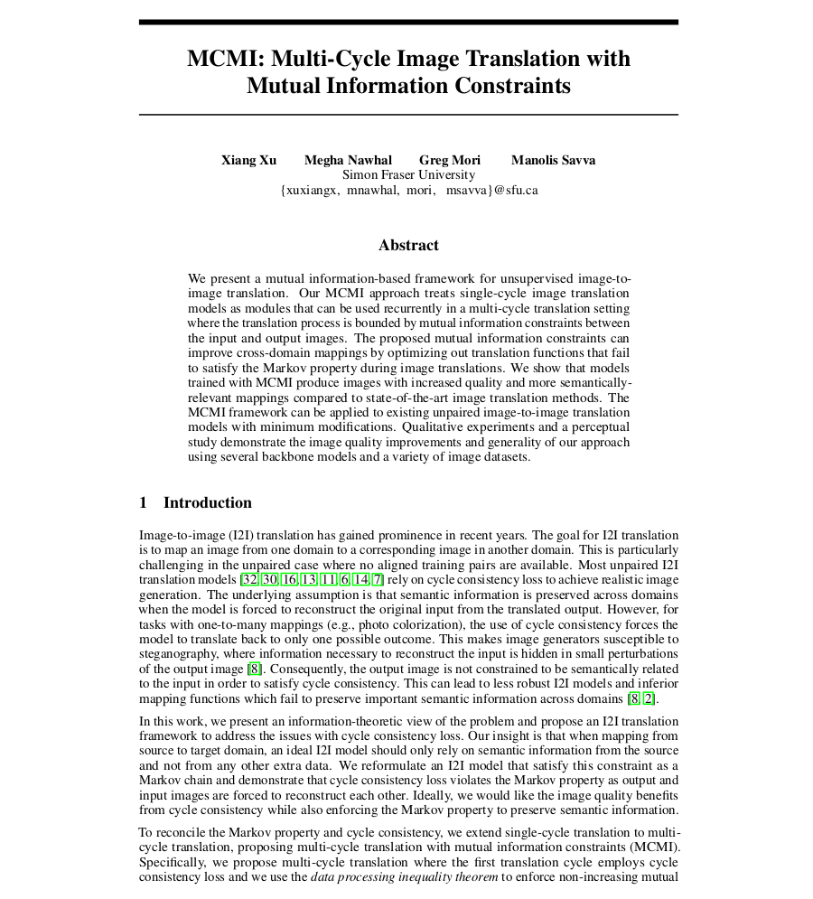

|
|
| We present a mutual information-based framework for unsupervised image-to-image translation. Our MCMI approach treats single-cycle image translation models as modules that can be used recurrently in a multi-cycle translation setting where the translation process is bounded by mutual information constraints between the input and output images. The proposed mutual information constraints can improve cross-domain mappings by optimizing out translation functions that fail to satisfy the Markov property during image translations. We show that models trained with MCMI produce images with increased quality and more semantically-relevant mappings compared to state-of-the-art image translation methods. The MCMI framework can be applied to existing unpaired image-to-image translation models with minimum modifications. Qualitative experiments and a perceptual study demonstrate the image quality improvements and generality of our approach using several backbone models and a variety of image datasets. |
|  |
MCMI: Multi-Cycle Image Translation with Mutual Information Constraints. X. Xu, M. Nawhal, G. Mori, M. Savva [arXiv] |
| Template borrowed from Richard Zhang. |